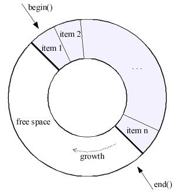
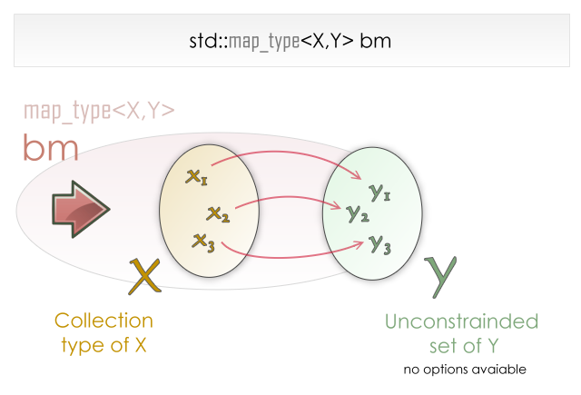
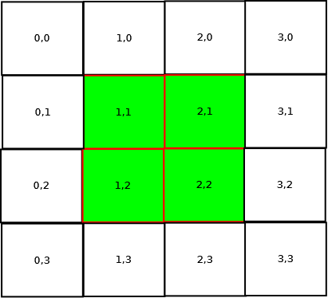

Le tuple est l'association de plusieurs éléments, structurellement semblable à un struct. On peut par exemple y stocker une relation élément/attribut ({objet : "Ballon", nombre: 4}), une position ({abscisse : 349, ordonne : 89, profondeur : 2}) ...
Ainsi ils peuvent contenir plusieurs sorte de données, et cette association forme un type, là ou un tableau ne peut en contenir qu'un, et ne précise pas leur nombre. De plus, par rapport à une structure anonyme utilisé en plusieurs endroits, un tuple sera toujours compatible avec d'autres tuples de même caractéristique, puisqu'il s'agit d'un type unique.
Utiliser les tuples
Vous n'avez pas besoin de librairie à lier, mais vous devez inclure les en-têtes suivants :
#include <boost/tuple/tuple.hpp> // Base
#include <boost/tuple/tuple_comparison.hpp> // Opérateurs de comparaison
#include <boost/tuple/tuple_io.hpp> // Tuples et IO
Pour créer un tuple, vous devez spécifier les types de ses éléments, puis éventuellement les initialiser :
Cependant, cette notation est pénible en cela qu'elle oblige à écrire chaque type. Pour pallier ce problème, Boost met à notre disposition une fonction permettant de créer des tuples.
monTuple = make_tuple(1, 2, 3, 4);
Si le tuple que vous essayez de créer doit contenir une référence, il faut le spécifier, autrement l'élément pointé sera copié : ref() pour forcer une référence, cref() pour forcer une référence constante.
Vous pouvez accéder au contenu du tuple de deux manières :
Via la fonction boost::get<NumeroElement>(tuple);
Via la méthode tuple.get<NumeroElement>();
Ce qui donne par exemple :
tuple <int, int> t(1,2);
get<0>(t) = 10; // t vaut 10|2
std::cout << t.get<1>(); // Le programme affiche 2
Notez d'ailleurs que vous n'aurez pas de mauvaise surprise : les accès à des données inexistantes (par exemple, t.get<3>() pour un tuple à 2 valeurs) sont détectés à la compilation, grâce à l'utilisation de template.
Comparaisons
Les tuples ont des opérateurs de comparaison (== , > ,< , ...) : le premier élément du tuple A sera comparé au premier élément du tuple B, le second au second, et ainsi de suite. Les tuples sont égaux si tous les éléments les constituants sont égaux un à un.
Flux
Vous pouvez imprimer un tuple sous la forme (1 2 3 Orly) en utilisant l'opérateur << :
Un tampon circulaire ("Circular buffer", que j'abrègerais TC) est un conteneur générique, qui fonctionne de manière très similaire à un std::vector à ceci près qu'il possède une taille et que les éléments inscrits une fois que le TC est plein seront écrits par-dessus les premiers éléments.

Un seul include pour les TC :
#include <boost/circular_buffer.hpp>
Le constructeur est tout ce qu'il y a de plus simple; par exemple, le code suivant créera un TC de 3 items contenant des int :
boost::circular_buffer<int> cb(3);
On peut ensuite insérer, comme dans un vector, des éléments à la fin:
L'état du TC est donc 1|2|3. Nous pouvons modifier les éléments qu'il contient comme un std::vector :
int a = cb[0]; // a vaut 1
a = cb.at(1); // a vaut 2
cb[2] = 1; // le TC est maintenant 1|2|1
Si malgré que le TC soit plein, on continue d'appeler push_back :
// t est un TC défini comme ceci: 1|2|3|4|5|6. Il est rempli
t.push_back(0); // t == 0|2|3|4|5|6
t.push_back(9); // t == 0|9|3|4|5|6
On peut enlever des items depuis le début et la fin du buffer (cf. le schéma précédent) :
// t est un TC défini comme ceci: 1|2|3|4|5|6. Il est rempli
t.pop_back(); // t == 1|2|3|4|5**
t.pop_front(); // t == **2|3|4|5**
Quelques autres méthodes notables sont fournies :
bool t.full(); // Plein ?
bool t.empty(); // Vide ?
size_t t.reserve(); // Nombre d'item non rempli ?
size_t t.capacity(); // Nombre d'item maximal ?
void t.set_capaxity(size_t); // Changement capacité
Attention ! Les changements de capacité affectent grandement les performances lorsque le buffer s'étend. Quand il est réduit, les derniers éléments sont retirés.
Vous trouverez la totalité de la documentation ici.
Un TC peut par exemple être utilisé dans :
Un système de cache avec n éléments maximum.
Une queue qui retire automatiquement les éléments trop anciens.
Un tampon avec frontière (bounded buffer en anglais) qui peut servir quand un thread produit des données, et qu'un autre les traitent. Voir cette implémentation.
Les std::vector sont parfaits quand il s'agit de tableau dynamique. Mais ne sont d'aucune utilité dans le cas de tableau réellement statique (nombre de cases défini, et immuable). Cependant, ils fournissent un certain confort, comme les itérateurs, l'accès sécurisé via at() , la taille du tableau via size() ,... C'est-à-dire une interface dans le style de la librairie standard. C'est pour cette raison que l'équipe Boost a créé boost.array, des tableaux statiques dans une optique C++, avec les avantages précités.
Pour les utiliser, incluez l'header unique suivant :
#include <boost/array.hpp>
Construisez un array avec :
boost::array<int,4> a;
Ce code construit un array nommé a, contenant des int, de taille 4.
L'accès au contenu de l'array se fait de 2 manières :
a[0] = 1;
a.at(0);
La deuxième méthode est considérée comme sûre car elle jette toujours une exception en cas d'accès hors de la plage de données, là où la première ne fait rien1
1
En vérité, la première méthode est protégée par une assertion :
// operator[]
reference operator[](size_type i)
{
BOOST_ASSERT( i < N && "out of range" );
return elems[i];
}
Cependant, cela pose deux problèmes :
Une assertion ratée conduit à la fermeture brutale du programme par un appel à abort()
Dans le mode de compilation release, les assertions sont réduites à néant
Un accès sécurisé par [x] est cependant possible car la classe fournit explicitement une méthode size() .
Qu'est ce qu'une map (dans la STL, il s'agit de std::map) ? Il s'agit de l'association d'une valeur, unique, appelée clé, avec un contenu, qui lui ne l'est pas forcément :
Vous associez la valeur de gauche à la valeur de droite. Cela correspond au schéma suivant issue de la documentation Boost :

Une bimap fait la même chose, mais dans les deux sens : les deux coté sont des clés : cela signifie premièrement que l'on peut accéder aux données depuis la gauche, ou depuis la droite, et secondement, contrairement à une map, que les doublons sont prohibés, car conduiraient à une situation incohérente où une recherche renverrait 2 résultats.
Utilisation
Incluez le header :
#include <boost/bimap.hpp>
On définit ensuite un type pour notre map (ce n'est pas obligatoire, mais c'est plus lisible). Dans l'exemple suivant, la bimap aura une coté int et un coté string :
On peut accéder directement aux vue gauche et droite. Dans ce cas, nous avons affaire à 2 maps simples (une bimap étant la combinaison de ces deux maps) :
Les différents choix sont listés ici, dans le tableau 1.2. Chacun de ses modes est adapté à un type particulier d'opération : certains de ces containers sont ordonnés, d'autres utilisent un hash, ...
Changer le comportement de la bimap
Si vous avez besoin malgré tout d'insérer des doublons dans vos bimaps, c'est possible : il suffit de remplacer une déclaration standard (bimap<int,std::string> bm;) avec le template multiset_of (bimap<int, multiset_of<std::string> > bm;)
Il existe plusieurs manières plus ou moins naïves de créer un tableau multidimensionnel :
Faire un tableau style C : tableau[10][2][4];
Faire un tableau à partir de std::vector imbriqué : std::vector< std::vector<...> >
Utiliser un algorithme maison (avec un tableau à une dimension et un peu de bricolage, on obtient relativement facilement ce qu'on veut)
Les grands problèmes de ces méthodes sont la non-compatibilité avec la STL, des utilisations mémoires inappropriées (std::vector est optimisé, ce qui peut jouer de sales tours), des problèmes de lisibilité.
Boost apporte une solution : Boost.MultiArray
Utilisation de multiarray
Voici l'include nécessaire :
#include <boost/multi_array.hpp>
Nous allons ensuite établir un typedef, pour des raisons de lisibilité :
typedef boost::multi_array<double, 3> mon_array;
Le type mon_array est un tableau de double à 3 dimensions.
Nous instancions ensuite ce type :
mon_array tableau(boost::extents[3][4][2]);
boost::extents[3][4][2]
est ce qui nous permet de déclarer la géométrie du tableau : il aura 3 cases dans sa première dimension, 4 cases dans sa seconde, et 2 cases dans se dernière.
On peut ensuite utiliser ce tableau multidimensionnel comme d'habitude :
tableau[1][2][4] = 0; // Remplir la case de coordonnée (1;2;3) avec 0
/* Remplir le tableau de 3 */
for(int i = 0; i != 3; ++i)
for(int j = 0; j != 4; ++j)
for(int k = 0; k != 2; ++k)
tableau[i][j][k] = 3;
Changement de géométrie
Il est possible de changer la géométrie du tableau, avec la méthode resize() :
/* Rappel : tableau est de géométrie [3][4][2]*/
tableau.resize(boost::extents[2][2][2]);
/* Sé géometrie est maintenant [2][2][2]*/
La réduction d'un tableau rend certaines cases hors de portée.
Vue
Il est possible de ne prendre en compte qu'une partie d'un tableau : il s'agit d'une vue. Elle est délimitée par un intervalle pour chaque dimension.

Dans ce schéma, la partie verte est une vue du tableau entier;
Cette vue est définie par les plages suivantes : X(1,2), Y(1,2).
Notez que nous spécifions explicitement que le tableau et la vue utilisent 2 dimensions (array_view<2>). Les plages de données désirées sont ensuite passées via l'opérateur [].
L'accès à la vue se fait exactement de la même manière que pour un tableau. De plus, toute modification du tableau sera reportée sur la vue, et vice-versa.
Usage
Les tableaux multidimensionnels sont utiles, encore plus combinés à des vues : vous pouvez diviser un traitement entre plusieurs threads en leur affectant seulement une vue du tableau.
La plupart des conteneurs C++, notablement ceux de la STL, sont non intrusifs, en cela qu'ils stockent des copies des objets. En plus d'effectuer une copie, certaines métadonnée sont stocké (exemple : pointeur vers l'objet suivant et précédent dans le cas d'une liste) Cela ne nécessite pas de modifier les classes cibles.
Un conteneur intrusif nécessite une modification de la classe, en cela qu'il stocke les métadonnées directement dans celle-ci : cela signifie donc qu'ils n'ont pas besoin de faire des copies des objets. Ainsi, les conteneurs intrusifs sont plus performants (principalement, car ils effectuent moins d'allocations/désallocations de la mémoire).
Boost fournit de quoi faire des conteneurs intrusifs ayant une interface STL, avec des méthodes comme push_back() , size() ...
Mise en garde
Les conteneurs intrusifs, de par leur nature, peuvent poser des problèmes s’ils ne sont pas utilisés correctement. Notez par exemple qu'une modification de votre classe peut amener à des effets de bord indépendants de Boost ; il est plus dur d'utiliser des conteneurs intrusifs dans un environnement multithreadé : des modifications peuvent s'opérer en dehors du champ d'opération du conteneur, car l'objet n'est jamais copié. Les conteneurs intrusifs sont d'ailleurs difficilement copiables de par leur nature.
Utilisation
Il faut d'abord inclure un entête correspondant au conteneur souhaité. Dans ce cas, la liste :
#include <boost/intrusive/list.hpp>
Il faut ensuite modifier sa classe pour la faire hériter de list_base_hook
class MaClasse : public boost::intrusive::list_base_hook<>
{
/* ... Contenu de la classe ...*/
};
La classe va hériter ,via notre hook, de propriété telle que les pointeurs next et previous, habituel dans les listes. Ainsi, l'intrusion ne nous est pas directement visible, mais elle est bien réelle.
Une fois ceci fait, nous pouvons déclarer notre liste intrusive :
Elle n'est utilisable qu'avec MaClasse, comme spécifié dans le template.
On peut ensuite utiliser la liste comme un conteneur STL :
MaClasse objet;
MaClasse_list liste;
liste.push_back(objet);
/* Les adresse affiché seront identique, car l'objet n'est pas copié !*/
std::cout << &( liste.front() ) << " " << &objet << std::endl;
Attention cependant lors de la manipulation d'un conteneur intrusif : si vous détruisez le conteneur, les ressources ne sont pas désallouées : vous vous exposez à des fuites considérables de mémoire. De même, ne désallouez pas manuellement un objet, car alors le conteneur contiendrait un pointeur invalide, et amènerait assez rapidement votre programme à crasher.
Autres conteneurs intrusif
Nous avons vu l'exemple de la liste. Pour utiliser les autres conteneurs, il suffit de changer l'héritage :
class MaClasse : public boost::intrusive::XXXXXXXX_base_hook<> // XXXXXX est le nom du conteneur souhaité
{
/* ... Contenu de la classe ...*/
};